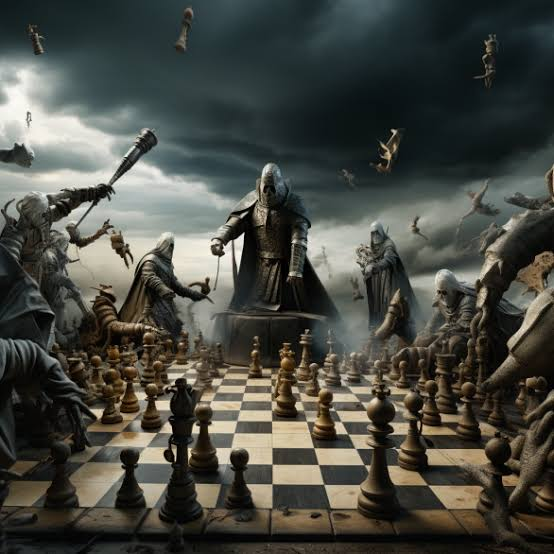
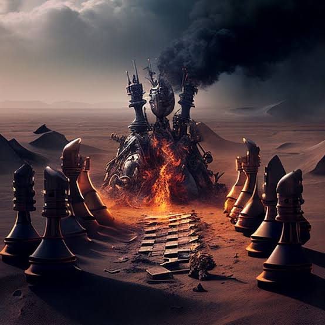

Every move is a step toward victory where strategy and foresight shape the path to success
Good day!
Greetings, noble chess player! As you position yourself at the board, you step into a realm where intellect and creativity converge, crafting a tapestry woven from the threads of strategy, patience, and foresight. This timeless game, cherished across centuries and cultures, invites you to engage in a profound exploration of the human mind, where every piece represents not just a move, but a philosophy, a strategy, and a story of its own.
May your opening moves be deliberate and thoughtful, reflecting the countless lessons learned from chess legends who have graced the board before you. As you unleash your pawns, let them be the foundation of your kingdom, each one a brave soldier ready to forge ahead into the fray. Allow your knights to leap into action, embodying the spirit of adventure, while your bishops glide elegantly across the diagonals, representing clarity of vision and purpose. Each piece has its role, and in their dance lies the potential for victory.
As the battle unfolds, remain attuned to the rhythm of the game. Every decision you make echoes with significance—whether to launch a bold attack or to solidify your defenses—each move becomes a brushstroke on the canvas of your strategy. Embrace the challenges that arise, for they are not obstacles but opportunities for growth. Learn to see beyond the immediate, to anticipate your opponent’s moves, and to adapt your strategy as the game evolves.
In the face of adversity, let your resilience shine through. Chess teaches us that setbacks are a natural part of any journey; it is how we respond to those moments that defines us. Every defeat carries the seeds of wisdom, offering insights that refine your skills and deepen your understanding of the game. Approach each match as a masterclass in self-discovery, where you hone not only your tactical abilities but also your emotional fortitude.
As you engage with your opponent, remember that the heart of chess lies in the camaraderie shared between players. This is a space where respect flourishes, where each move is met with admiration, and where the love for the game transcends competition. Forge connections with fellow players, sharing stories, strategies, and the joy of the game. In this community, you will find inspiration, encouragement, and the motivation to elevate your play.
Chess is not merely a game; it is a lifelong journey that mirrors the complexities of life itself. Just as in chess, our lives are a series of choices, each with its own consequences, requiring foresight, planning, and adaptability. Approach each game with a spirit of curiosity and exploration, ready to learn and grow, and relish in the process of discovery that unfolds with every match.
So, as you prepare to make your first move, let your heart be filled with excitement and anticipation. Embrace the challenge, and play with passion and purpose. With every piece you move, let it symbolize not just a step toward victory, but a testament to your dedication, your intellect, and your unwavering commitment to the noble art of chess. May your journey at the board be one of endless exploration, profound learning, and joyful triumphs, as you navigate the rich landscape of this magnificent game!


Let's Play
I’d like to extend a heartfelt invitation to you for a game of chess! There’s something truly special about gathering around the board, where strategy, intellect, and creativity converge in a timeless battle of wits. Chess offers a unique opportunity to challenge each other, allowing us to dive deep into the intricacies of the game while enjoying friendly competition.
Whether you're a seasoned player with countless strategies up your sleeve or just starting to explore the fascinating world of chess, I believe we can both gain something valuable from the experience. Each match offers lessons not only in tactics but also in patience, foresight, and the art of anticipating an opponent's moves. The beauty of chess lies in its complexity—every game unfolds differently, presenting new challenges and opportunities. It’s a dance of strategy and intuition, where every piece on the board has its own story and purpose.
I always find that engaging in a game together sparks interesting discussions about strategy and technique, and it’s a great way to bond over our shared passion for this incredible game. Imagine the thrill of making bold moves, executing clever traps, and countering each other's strategies as we navigate through the game. With every pawn advanced, every knight maneuvered, and every sacrifice made, we’ll not only challenge each other’s skills but also deepen our understanding of this age-old art.
So, if you’re interested, let me know your availability, and we can arrange a time that works for both of us. I’m eager to share this experience with you and see where our strategies lead us. Let’s set the pieces, enjoy some friendly rivalry, and perhaps even create some unforgettable moments filled with laughter and insight. Here’s to a memorable match that will not only challenge our minds but also strengthen our friendship as we dive into the rich tapestry of chess!
Join Today
I'm organizing some chess games and would love for you to join us! It doesn’t matter if you’re a seasoned player or a beginner; it’s a great opportunity to have fun, improve your skills, and meet new people. If you're interested, let me know, and I can share the details about when and where we’ll be playing. Feel free to bring any friends who might want to join as well!